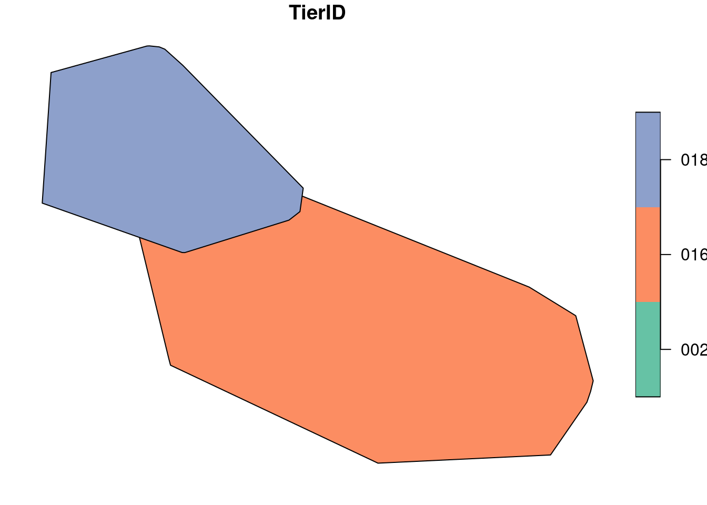
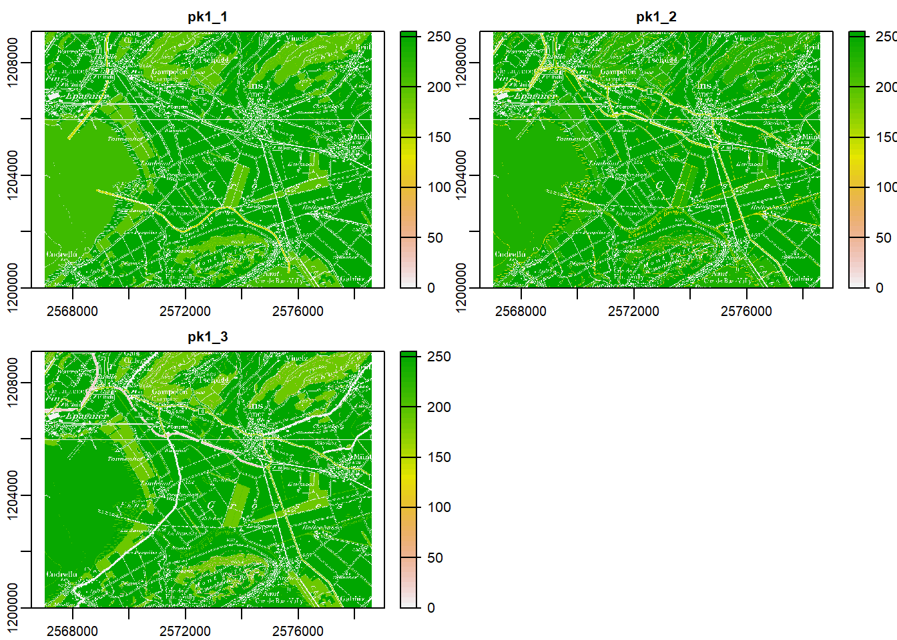
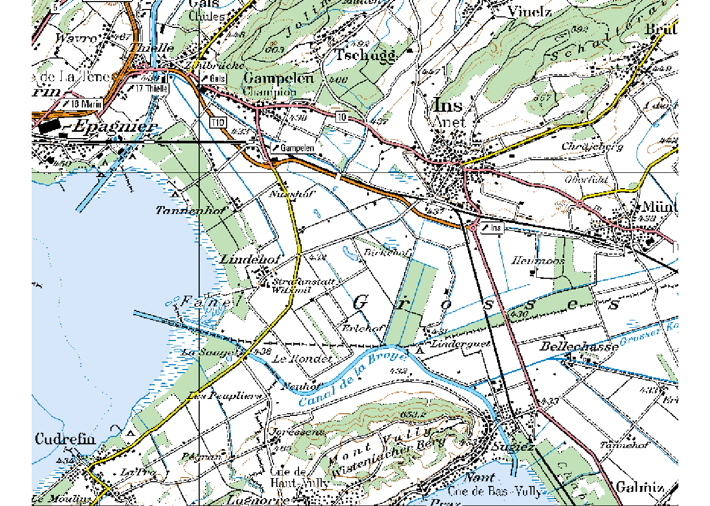
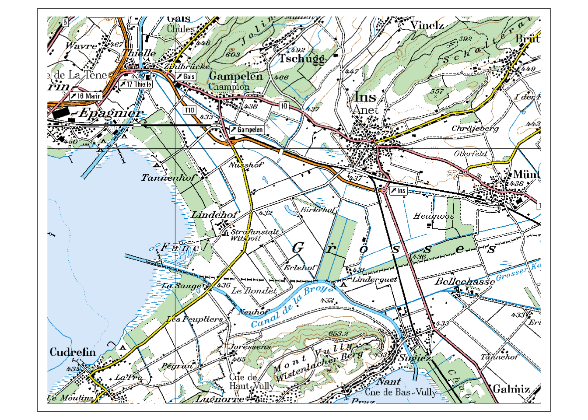
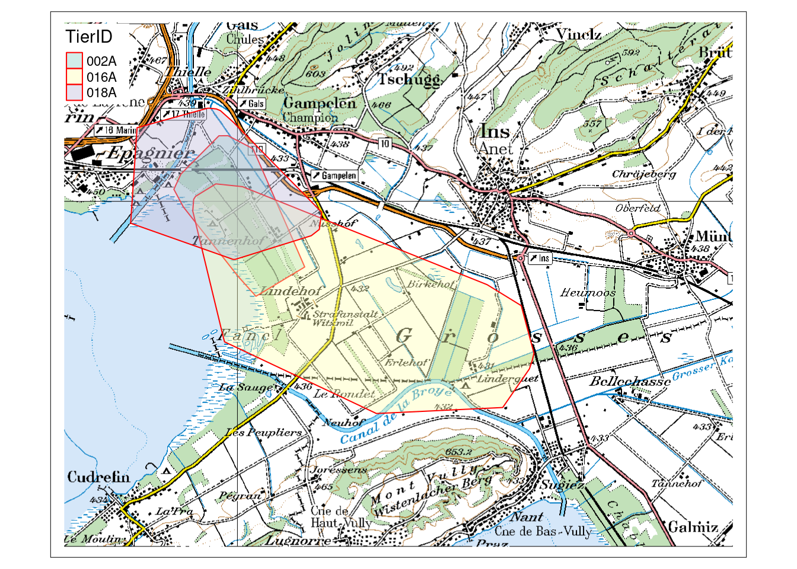

2.3 Tasks and inputs
Before starting with the task:
- make sure you have read and followed the instructions in section Preparation
- In RStudio, open the RStudio Project you created for this week if you haven’t done so already. You can see that you are in an RStudio Project if the project’s name is visible next to the little RStudio logo in the top right corner of RStudio (otherwise it will read
Project: (None)). - Download the wildboar movement data here: wildschwein_BE.csv (right click “Save target as..”)
Once you have set everything up, commit your file to your git repo in the following manner:
- Save your (R/RMarkdown) file
- Switch to the “Git”-Tab in the pane in the top right corner
- Click “commit” to open the “commit-Window”
- Click in the checkbox next to the file(s) you want to commit
- Add a commit message to explain what you are committing (e.g. “
initial commit”) - Click on “commit” to commit your changes
2.3.1 Task 1: Import data
Create a new R- (or RMarkdown) file and begin by loading the following packages:
library(readr) # to import tabular data (e.g. csv)
library(dplyr) # to manipulate (tabular) data
library(ggplot2) # to visualize dataMove the file wildschwein_BE.csv into your project directory and import it into r as a data.frame. Assign correct column types as necessary and make sure the time zone is set correctly for the date/time column.
Note: We recommend using the readr package to import your data (they all begin with read_*, note the underscore). These functions are less error prone than the base R functions (read.*, note the period). Specifically for the wild boar data, we recommend read_delim().
Commit your changes as described in the beginning. Write a meaningful commit message (e.g. “completed task 1”).
2.3.2 Task 2: Explore Data
We will use a range of different visualization tools (i.e. R-packages) in this course. Several packages techniques have emerged in recent years, each with their specific strengths and weaknesses. While base::plot()is quick and simple, it not very scalable with growing complexity. ggplot2 offers solutions for most use cases and has an elegant, consistent syntax that is easy to get accustomed to. We will get to know other techniques later in the course.
Get an overview of your data by creating a first “map-like” plot of your data producing a simple scatter plot with ggplot2.
Setting up a ggplot with our data is done using the command ggplot(wildschwein_BE, aes(Long, Lat, colour = TierID)). Creating a map is done via the basic scatter plot command geom_point().
Assigning every individual its own colour is done using the ggplot argument colour =.
Commit your changes as described in the beginning. Have a look at your commit history by clicking on “History” in the “Git”-Pane.
Figure 2.1: Your plot should look something like this.
2.3.3 Input: Handling spatial data
Until now, we’ve stored our location data within data frames as Lat/Long columns. This works well for many tasks, but sometimes we need special spatial classes to handle our trajectories. We will get to know such cases in our next tasks, but first we need to convert our data.frame into a spatial object.
We will largely rely on sfwhen working with vector data in R. In order to transform our data.frame into an sf object, we need to use the function st_as_sf() while specifying the columns storing the coordinates and the coordinate reference system.
(At this point, we assume you know what a Coordinate Reference Systems is. Check out this link if this is not the case.)
library(sf)
wildschwein_BE_sf <- st_as_sf(wildschwein_BE,
coords = c("Long", "Lat"),
crs = 4326)Notice how st_as_sf takes the EPSG code for the crs = argument. You can find a lot of useful information on Coordinate Reference Systems (including EPSG Codes, etc.) under epsg.io.
Let’s compare our original data.frame with this new sf object:
wildschwein_BE## # A tibble: 51,246 × 6
## TierID TierName CollarID DatetimeUTC Lat Long
## <chr> <chr> <dbl> <dttm> <dbl> <dbl>
## 1 002A Sabi 12275 2014-08-22 21:00:12 47.0 7.05
## 2 002A Sabi 12275 2014-08-22 21:15:16 47.0 7.05
## 3 002A Sabi 12275 2014-08-22 21:30:43 47.0 7.05
## 4 002A Sabi 12275 2014-08-22 21:46:07 47.0 7.05
## 5 002A Sabi 12275 2014-08-22 22:00:22 47.0 7.05
## 6 002A Sabi 12275 2014-08-22 22:15:10 47.0 7.05
## 7 002A Sabi 12275 2014-08-22 22:30:13 47.0 7.05
## 8 002A Sabi 12275 2014-08-22 22:45:11 47.0 7.05
## 9 002A Sabi 12275 2014-08-22 23:00:27 47.0 7.05
## 10 002A Sabi 12275 2014-08-22 23:15:41 47.0 7.05
## # … with 51,236 more rowswildschwein_BE_sf## Simple feature collection with 51246 features and 4 fields
## Geometry type: POINT
## Dimension: XY
## Bounding box: xmin: 7.019889 ymin: 46.97125 xmax: 7.112075 ymax: 47.01882
## Geodetic CRS: WGS 84
## # A tibble: 51,246 × 5
## TierID TierName CollarID DatetimeUTC geometry
## * <chr> <chr> <dbl> <dttm> <POINT [°]>
## 1 002A Sabi 12275 2014-08-22 21:00:12 (7.049618 46.99317)
## 2 002A Sabi 12275 2014-08-22 21:15:16 (7.049509 46.99416)
## 3 002A Sabi 12275 2014-08-22 21:30:43 (7.049406 46.99383)
## 4 002A Sabi 12275 2014-08-22 21:46:07 (7.049217 46.99375)
## 5 002A Sabi 12275 2014-08-22 22:00:22 (7.049359 46.99375)
## 6 002A Sabi 12275 2014-08-22 22:15:10 (7.049363 46.99382)
## 7 002A Sabi 12275 2014-08-22 22:30:13 (7.049326 46.99387)
## 8 002A Sabi 12275 2014-08-22 22:45:11 (7.049237 46.99395)
## 9 002A Sabi 12275 2014-08-22 23:00:27 (7.048383 46.99481)
## 10 002A Sabi 12275 2014-08-22 23:15:41 (7.049396 46.99373)
## # … with 51,236 more rowsAs you can see, st_as_sf() has added some metadata to our dataframe (geometry type, dimension, bbox, epsg and proj4string) and replaced the columns Lat and Long with a column named geometry. Other than that, the new sf object is very similar to our original dataframe. In fact, sf objects are essentially dataframes, as you can verify with the function is.data.frame():
is.data.frame(wildschwein_BE_sf)
## [1] TRUEAll operations we know from handling data.frames can be used on the sf object. Try some out!
# subset rows
wildschwein_BE_sf[1:10,]
wildschwein_BE_sf[wildschwein_BE_sf$TierName == "Sabi",]
# subset colums
wildschwein_BE_sf[,2:3]Instead of keeping the same data twice (once as a data.frame, and once as an sf object), we will overwrite the data.frame and continue working with the sf object from now on. This saves some memory space in R and avoids confusion.
wildschwein_BE <- st_as_sf(wildschwein_BE,
coords = c("Long", "Lat"),
crs = 4326)
rm(wildschwein_BE_sf)
# we can remove this sf object, since it just eats up our memory2.3.4 Task 3: Project data from WGS84
So what can we do with our new sf object that we couldn’t before? One example is projecting the WGS84 (Lat/Long) coordinates into the new Swiss CRS CH1903+ LV954. Do this by using the function st_transform. By the way, do you notice a pattern here? The package sf names most functions for spatial operations with the prefix st_*, just as in PostGIS.
Here’s the resulting sf object from the operation:
wildschwein_BE
## Simple feature collection with 51246 features and 4 fields
## Geometry type: POINT
## Dimension: XY
## Bounding box: xmin: 2568153 ymin: 1202306 xmax: 2575154 ymax: 1207609
## Projected CRS: CH1903+ / LV95
## # A tibble: 51,246 × 5
## TierID TierName CollarID DatetimeUTC geometry
## * <chr> <chr> <dbl> <dttm> <POINT [m]>
## 1 002A Sabi 12275 2014-08-22 21:00:12 (2570409 1204752)
## 2 002A Sabi 12275 2014-08-22 21:15:16 (2570402 1204863)
## 3 002A Sabi 12275 2014-08-22 21:30:43 (2570394 1204826)
## 4 002A Sabi 12275 2014-08-22 21:46:07 (2570379 1204817)
## 5 002A Sabi 12275 2014-08-22 22:00:22 (2570390 1204818)
## 6 002A Sabi 12275 2014-08-22 22:15:10 (2570390 1204825)
## 7 002A Sabi 12275 2014-08-22 22:30:13 (2570387 1204831)
## 8 002A Sabi 12275 2014-08-22 22:45:11 (2570381 1204840)
## 9 002A Sabi 12275 2014-08-22 23:00:27 (2570316 1204935)
## 10 002A Sabi 12275 2014-08-22 23:15:41 (2570393 1204815)
## # … with 51,236 more rowsCommit your changes as described in the beginning.
2.3.5 Input: Calculate Convex Hull
Transforming from one Coordinate Reference System to another was one operation where we needed an object with a spatial nature. In this way, we were able to use an off the shelf function to project the coordinates from one CRS to another. In our next example, we again rely on a spatial function: We want to calculate a convex hull per Wild boar. And guess what the function for calculating a convex hull is called in sf? If you guessed st_convex_hull(), you were right!
By default st_convex_hull() calculates the convex hull per feature, i.e. per point in our dataset. This of course makes little sense. In order to calculate the convex hull per animal, we need to convert our point- to multipoint-features where each feature contains all positions of one animal. This is achieved in two steps:
First: add a grouping variable to the sf object. Note the new grouping variable in the metadata of the sf object. Other than that, group_by has no effect on our sf object.
wildschwein_BE_grouped <- group_by(wildschwein_BE,TierID)
wildschwein_BE_grouped
## Simple feature collection with 51246 features and 4 fields
## Geometry type: POINT
## Dimension: XY
## Bounding box: xmin: 2568153 ymin: 1202306 xmax: 2575154 ymax: 1207609
## Projected CRS: CH1903+ / LV95
## # A tibble: 51,246 × 5
## # Groups: TierID [3]
## TierID TierName CollarID DatetimeUTC geometry
## <chr> <chr> <dbl> <dttm> <POINT [m]>
## 1 002A Sabi 12275 2014-08-22 21:00:12 (2570409 1204752)
## 2 002A Sabi 12275 2014-08-22 21:15:16 (2570402 1204863)
## 3 002A Sabi 12275 2014-08-22 21:30:43 (2570394 1204826)
## 4 002A Sabi 12275 2014-08-22 21:46:07 (2570379 1204817)
## 5 002A Sabi 12275 2014-08-22 22:00:22 (2570390 1204818)
## 6 002A Sabi 12275 2014-08-22 22:15:10 (2570390 1204825)
## 7 002A Sabi 12275 2014-08-22 22:30:13 (2570387 1204831)
## 8 002A Sabi 12275 2014-08-22 22:45:11 (2570381 1204840)
## 9 002A Sabi 12275 2014-08-22 23:00:27 (2570316 1204935)
## 10 002A Sabi 12275 2014-08-22 23:15:41 (2570393 1204815)
## # … with 51,236 more rowsSecond: use summarise() to “dissolve” all points into a mulipoint object.
wildschwein_BE_smry <- summarise(wildschwein_BE_grouped)
wildschwein_BE_smry
## Simple feature collection with 3 features and 1 field
## Geometry type: MULTIPOINT
## Dimension: XY
## Bounding box: xmin: 2568153 ymin: 1202306 xmax: 2575154 ymax: 1207609
## Projected CRS: CH1903+ / LV95
## # A tibble: 3 × 2
## TierID geometry
## <chr> <MULTIPOINT [m]>
## 1 002A ((2568903 1206200), (2568925 1206207), (2568980 1206197), (2569024 120…
## 2 016A ((2569231 1205823), (2569245 1205925), (2569247 1206027), (2569251 120…
## 3 018A ((2568153 1205611), (2568155 1205613), (2568161 1205624), (2568162 120…Now we can run st_convex_hull on the new sf object.
mcp <- st_convex_hull(wildschwein_BE_smry)2.3.6 Task 4: Ploting spatial objects
Using base plot to visualize sf objects is easy enough, just try the following code.
plot(mcp)
But since we use ggplot extensively, try and plot the object mcp with ggplot. Hint: Use the layer geom_sf() to add an sf object.
Note: ggplot refuses to use our specified CRS, so we need to force this by specifying datum = in coord_sf(). Try it out.
Commit your changes as described in the beginning. Have a look at your commit history by clicking on “History” in the “Git”-Pane.
2.3.7 Input: Importing raster data
In the next task, we would like to add a background map to our mcp object. Download the file here: pk100_BE.tif
To import the file into R, we use the package terra with the function rast.
library(terra)
pk100_BE <- terra::rast("00_Rawdata/pk100_BE.tif")
pk100_BE
## class : SpatRaster
## dimensions : 1821, 2321, 3 (nrow, ncol, nlyr)
## resolution : 5, 5 (x, y)
## extent : 2567000, 2578605, 1199996, 1209101 (xmin, xmax, ymin, ymax)
## coord. ref. : CH1903+ / LV95 (EPSG:2056)
## source : pk100_BE.tif
## names : pk1_1, pk1_2, pk1_3
## min values : 0, 0, 0
## max values : 255, 255, 255pk100_BE_2056.tif is a three layered geotiff File. The above console output shows some metadata including the resolution, extent and the names of our layers (pk1_1, pk1_2etc). With the default plot method, each layer is displayed individually:
plot(pk100_BE)
With plotRGB all three layers are combined into a single image:
plotRGB(pk100_BE)
2.3.8 Task 5: Adding a background map
There are multiple ways to add a background map in ggplot, many require additional packages. This is a good opportunity to get to know a completely different package for creating maps: tmap (“thematic map”). This package was developed with a syntax very similar to ggplot2, which makes it easy to learn.
library(tmap)
tm_shape(pk100_BE) +
tm_rgb() 
As you can see, plotting layers in tmap is combined with the + sign, just as in ggplot2. In tmap however, each layer consists of two objects: a tm_shape() in which the data is called, and a tm_* object in which we define how the data is visualized (tm_rgb() states that it is plotted as an RGB Raster Layer). Add the object mcp to the plot in this manner. Read the vignette if you are having trouble.

Commit your changes as described in the beginning.
2.3.9 Task 6: Create an interactive map
Rerun the tmap()... command from the previous task, but switch the plotting mode to “view”” (tmap_mode("view")) beforehand. Omit the raster layer (pk100_BE), you won’t be needing it.
Commit your changes as described in the beginning. Have a look at your commit history by clicking on “History” in the “Git”-Pane.
As we’ve mentioned in the first Input, you can look up the EPSG codes under (epsg.io)[http://epsg.io]. For information specific to Switzerland, check the swisstopo website↩︎